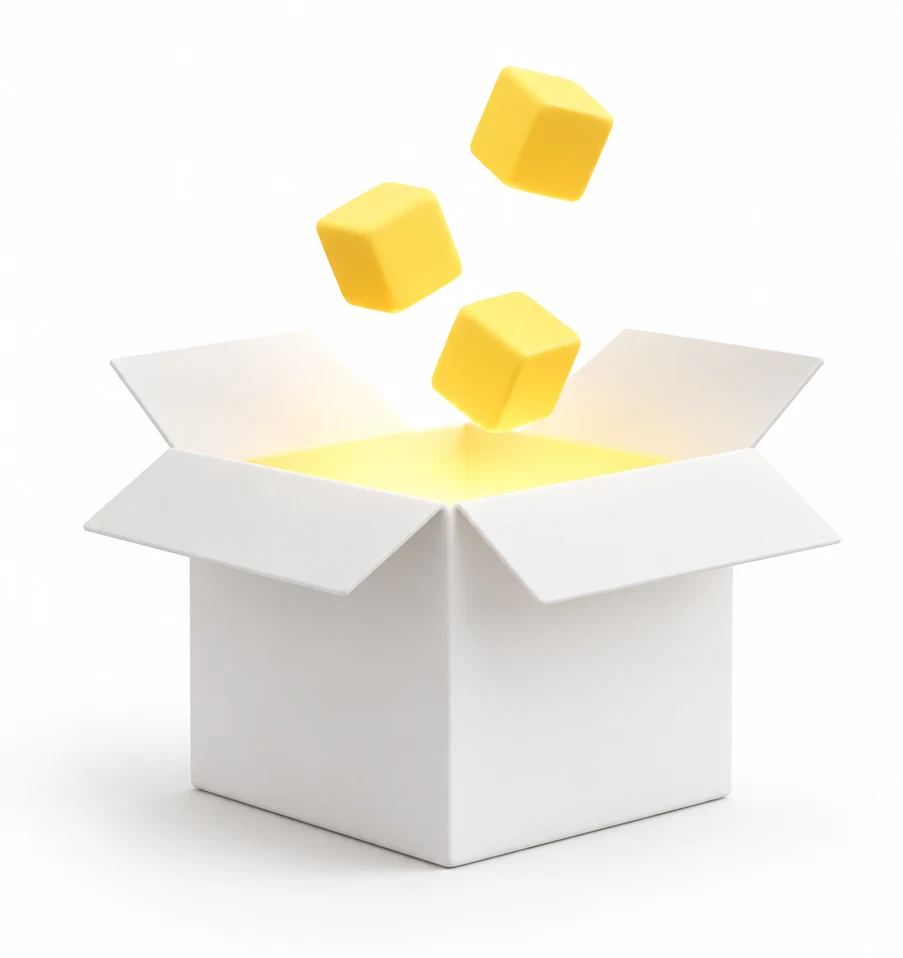
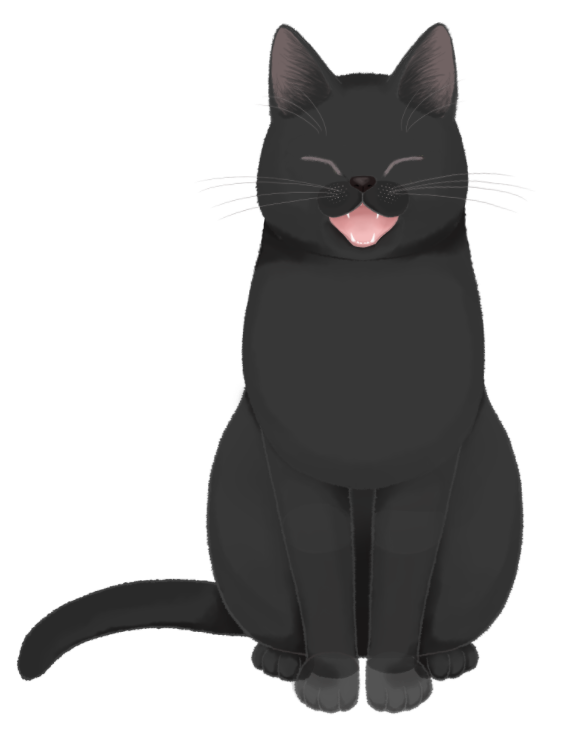
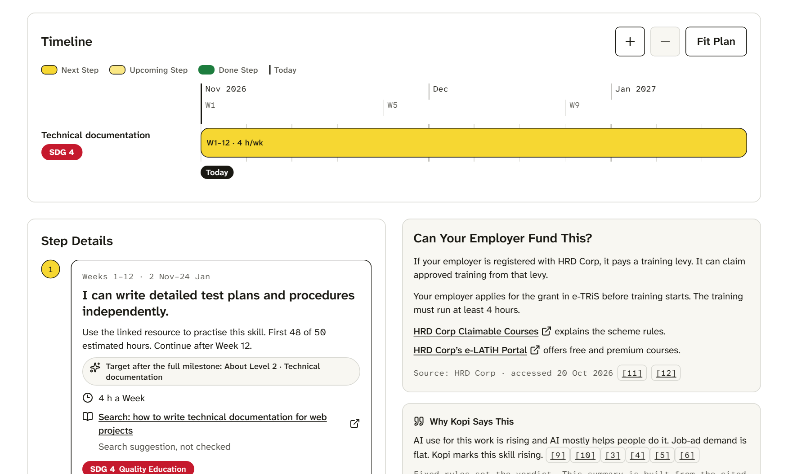
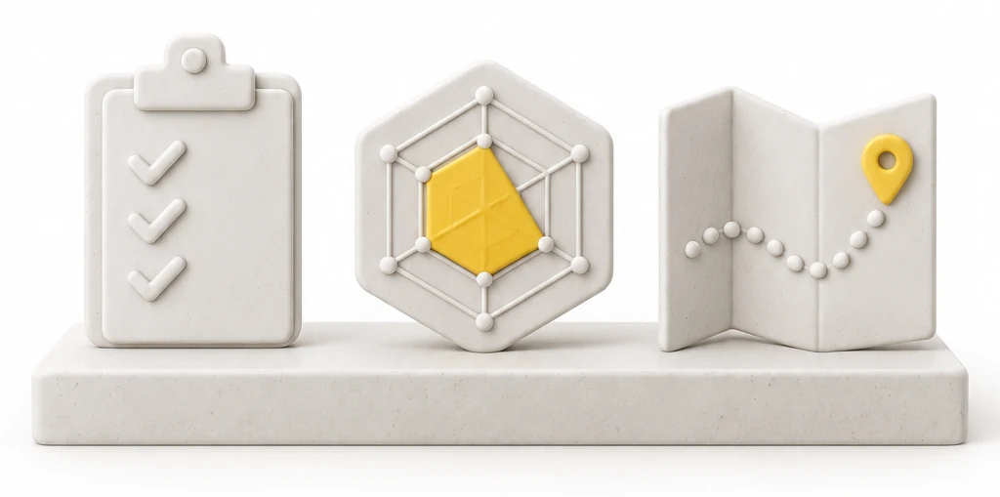

Team T010NG · “Tolong” = help
Team T010NG · “Tolong” = help
Domain 1 · Future-Ready Workforce · Aiversecity
Open the box
on your job.
Kotak shows a worker what AI changes in their job, and what to learn next.


The problem
Malaysia · 2026
This time,
it’s the office.

who lost their jobs were professionals, managers, executives or technicians (51%).
PERKESO data via SAYS · BusinessToday · 4 Oct 2026
Bank Negara · Labour Department · via BusinessToday
52,607 Malaysians lost their jobs by mid-July. About 270 a day.
AI is not among the six main factors.
Jobs most exposed to AI: 69% more job losses than average.
Who Kotak is for
Software and digital workers · HRD Corp levy employers
Developers, testers, designers:
the week AI arrives.
- Front-end developer, Kuala Lumpur
- Her employer pays the HRD Corp levy
- The company just rolled out AI coding tools
 The solution
The solution
Why a worker uses Kotak
Three minutes in. A dated plan out.
What they get today
Generative AI for everyoneCloud fundamentalsPrompt engineering 101Data analytics bootcamp A course list. Which one first, and why now?
How it works
Three steps · then the live demo
Data decides. AI explains.
Answer
12 can-do questions about your real work.
Decide
Your answers meet dated public data.
Act
A skills radar, ranked roles and a plan.

Innovation
Public-tool review · Oct 2026
Courses are the supply.
Kotak sets the priority.
| What exists | Dated AI trend per skill | Visible fixed maths | Timed plan to a fit target | Funding route | Callable by any AI (MCP) |
|---|---|---|---|---|---|
| MyMahirTalentCorp role and skill maps | |||||
| LinkedIn Career Explorerskills-similarity score | |||||
| MasterClasssubscription video courses | |||||
| ReSkillslive online classes | |||||
| e-LATiHHRD Corp learning portal | |||||
| A general AI chatbotany LLM | ? | ||||
| Kotak |
Impact · SDG 4.4
What changes for Malaysia
From at risk to ready,
with receipts.

jobs significantly affected in 3–5 years without upskilling
HR Minister · Malay Mail · 24 Jun 2026
of Malaysians have above-basic digital skills: the SDG 4.4.1 baseline
DOSM · UN SDG API · 2024
levy collected for training in 2025, ready to be spent well
HRD Corp annual report 2025
Every worker knows what AI changes, and what to learn next.
0 uncited claims
Who pays
Business model · prices to test, not contracts
Workers free. Employers pay.
Agencies license.
Check-up, radar, roles and a dated plan.
Billed yearly. A team view of skill gaps and who to train first.
Yearly. Anonymous skill-gap totals for TalentCorp and HRD Corp, groups of 10+.
The levy is 1% of wages: RM63 a month at the RM6,300 median. Kotak Team is under a tenth of that.
HRD Corp FAQ · JobStreet ads, 24 Oct 2026
Coursera for Teams lists US$399 a seat a year.
coursera.org list price
No paid placement. A course never buys its way into a plan.
Plans rank by data only
Technical approach
Engine + product · one rulebook
Two halves, one rulebook, no guessing.
923 jobs drafted in 13 min, 0 failed. Over 120 automated tests pass on every change.
A check rejects any explanation that changes a verdict. A template answers if Claude fails.
Try Kotak
Open the box
on your job.
Data decides. AI explains. You choose.